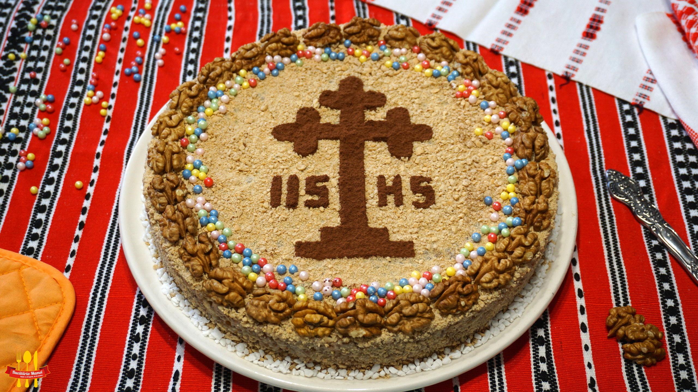

Coliva

Description
Coliva is a traditional ritual dish in Eastern Orthodox Christianity, primarily prepared for memorial services.
This flavorful grain-based dessert symbolizes the cycle of life and the resurrection.
It is made from boiled wheat berries, which are sweetened with honey or sugar and mixed with crushed walnuts.
The wheat represents the soul's hope for eternal life, while the sweetness symbolizes the bliss of heaven.
The mixture is typically shaped into a mound or a cross and elaborately decorated with powdered sugar, cocoa, or candies.
More than just food, coliva is a profound symbol of community, remembrance, and faith shared among family and friends.
Ingredients
- 500 g pearl barley
- 1 pinch sea salt
- 150 g sugar
- 300 g walnut kernels
- 1 piece lemon zest (zest of one lemon)
- 1 piece orange zest (zest of one orange)
- 2 teaspoons ground cinnamon
- 150 g raisins
- 20 ml rum extract
- 20 ml vanilla extract
- 50 g biscuits (cookies/tea biscuits)
- 50 g candies (for decoration)
- 20 g mixed nuts
-
Wash the pearl barley very well. Once washed and thoroughly drained, measure the quantity.
For every 1 cup of barley, add 2 cups of water.
- Add a pinch of salt and place over medium-to-low heat.
Stir occasionally until the barley "blooms" (softens/opens up), is thoroughly cooked, and the liquid has been absorbed.
- Meanwhile, soak the raisins in lukewarm water mixed with the rum extract.
- When the barley is almost fully cooked, add the sugar and stir well.
-
Add the remaining ingredients: the coarsely chopped walnuts, lemon and orange zest, cinnamon, and the soaked raisins.
Stir and let it simmer for a few more minutes so the flavors meld together.
-
While the colivă is still warm, pour it into a mold.
(In this case, a 17 cm springform pan).
-
Let the colivă cool completely. Once cooled, decorate the top with ground biscuits, candies, and mixed nuts.